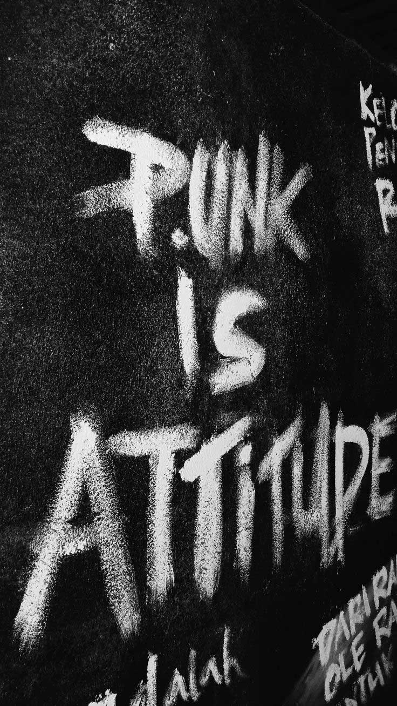

Die Philosophie von No Future Records basiert auf der Überzeugung, dass Musik mehr ist als Unterhaltung. Punk und Metal stehen seit jeher für Haltung, Austausch und Gemeinschaft. Sie verbinden Menschen über Generationen, Szenen und persönliche Hintergründe hinweg. Aus diesem Verständnis heraus legen wir großen Wert auf Authentizität, Geschichte und Subkultur. Unser Sortiment besteht bewusst aus Einzelstücken, Originalveröffentlichungen und besonderen Tonträgern, die nicht beliebig reproduzierbar sind. Jedes Album, jede Platte und jeder Artikel steht für einen bestimmten Moment, eine Bewegung oder eine Idee innerhalb der Szene. Musik lebt jedoch nicht nur vom Sammeln, sondern vom Erleben und Teilen. Deshalb verstehen wir No Future Records nicht nur als Verkaufsort, sondern als Treffpunkt. Mit unserer Open Music Night schaffen wir einen Raum, in dem Musik gehört, entdeckt und gemeinsam erlebt werden kann. Hier geht es nicht um Genreschranken oder Vorkenntnisse, sondern um Austausch, Offenheit und die verbindende Kraft von Musik. Unsere Philosophie ist es, Musik zugänglich zu machen, ohne sie zu vereinfachen. No Future Records steht für Respekt gegenüber der Vergangenheit, Offenheit gegenüber neuen Einflüssen und für eine Szene, die durch Musik zusammenhält.
